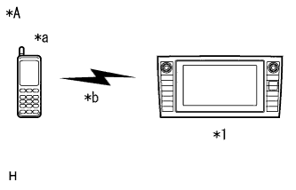

 |
With Bluetooth Telephone Connected
A Bluetooth cellular phone is used for hands-free calls.
- □ HINT □
- Depending on the part replaced, setting work may be necessary. (see
 )
)
Text in Illustrations *A w/ HDD Navigation System *1 Navigation Receiver Assembly *a With Bluetooth Telephone Connected *b Bluetooth Connection